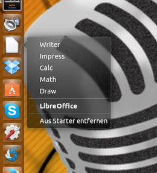
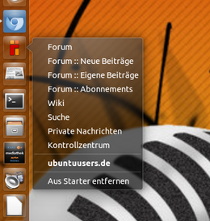

Quicklists
Dieser Artikel wurde für die folgenden Ubuntu-Versionen getestet:
Ubuntu 16.04 Xenial Xerus
Ubuntu 14.04 Trusty Tahr
Zum Verständnis dieses Artikels sind folgende Seiten hilfreich:
 Eine der nützlichen Funktionen der Unity Startleiste am linken Bildschirmrand ist die Möglichkeit, bestimmte Anwendungen mit Quicklists zu erweitern. So kann man z.B. direkt aus der Startleiste heraus ein neues Dokument in gedit erstellen, neue Tabs im Firefox öffnen und vieles mehr… Dieser Artikel soll zeigen, wie Quicklists aufgebaut sind und wie man sie zu bestehenden Programmstartern hinzufügt.
Eine der nützlichen Funktionen der Unity Startleiste am linken Bildschirmrand ist die Möglichkeit, bestimmte Anwendungen mit Quicklists zu erweitern. So kann man z.B. direkt aus der Startleiste heraus ein neues Dokument in gedit erstellen, neue Tabs im Firefox öffnen und vieles mehr… Dieser Artikel soll zeigen, wie Quicklists aufgebaut sind und wie man sie zu bestehenden Programmstartern hinzufügt.
Ab der Version 3.12 verwendet auch die GNOME Shell Quicklists, die hier aber "Jumplists" heißen. Diese sind im Aufbau identisch mit denen von Unity. Einzig die Zeile "OnlyShowIn=Unity;" muss in "OnlyShowIn=Unity;GNOME;" geändert werden. Diese Schreibweise wird auch in den nachfolgenden Beispielen verwendet.
Sämtliche persönlichen Quicklists sollten nach Ergänzung der entsprechenden .desktop-Datei im versteckten Ordner ~/.local/share/applications/ im Homeverzeichnis abgespeichert werden.
Es ist noch zu beachten, dass das Symbol in der Startleiste nach Abschluss aller Konfigurationsarbeiten ausgetauscht werden muss (kann per Drag'n'Drop geschehen), und zwar durch jenes, das zum neuen bzw. bearbeiteten Programmstarter gehört. Wird dies nicht gemacht, verwendet Ubuntu nämlich weiterhin den alten Starter.
Aufbau¶
|  |
| Quicklist für LibreOffice |
Eine Quicklist ist grundsätzlich eine Erweiterung einer .desktop-Datei, wobei diese um folgendes Gerüst ergänzt wird:
1 2 3 4 5 6 7 8 | […] Actions=ELEMENTNAME; [Desktop Action ELEMENTNAME] Name=BESCHREIBUNG Exec=BEFEHL Path=PFAD/ZUR/ANWENDUNG OnlyShowIn=Unity;GNOME; |
Die Zeile:
Actions=ELEMENTNAME;
weist den Unity Launcher darauf hin, dass nun eine Quicklist beginnt. In diesem Beispiel enthält die Quicklist ein Element mit dem Namen "ELEMENTNAME", aber es können auch mehrere Elemente in die Quicklist aufgenommen werden. Die einzelnen Elemente werden mit einem Semikolon abgetrennt.
| Erläuterung | |
| Element | Beschreibung |
[Desktop Action ELEMENTNAME] | Weist darauf hin, dass die folgenden Parameter zum Element "ELEMENTNAME" gehören. |
Name=BESCHREIBUNG | Text, der angezeigt werden soll |
Exec=BEFEHL | Befehl, der ausgeführt werden soll, wenn dieses Element ausgewählt wird. |
Path=PFAD/ZUR/ANWENDUNG | Legt einen Ordner fest, aus dem der Befehl ausgeführt werden soll. Diese Zeile ist optional und kann auch weggelassen werden. |
OnlyShowIn=Unity;GNOME; | Lässt dieses Element nur in Unity und GNOME 3 erscheinen und verhindert damit Probleme mit anderen Desktop-Umgebungen. |
Dateirechte¶
Damit die .desktop-Dateien auch benutzt werden können, muss in den Datei-Rechten [1] explizit die Ausführung gestattet sein (siehe auch Starter ausführbar machen). Diese Rechte kann man entweder über das Kontextmenü eines Dateimanagers mit  "Eigenschaften -> Zugriffsrechte (bzw. Berechtigungen)" oder über folgenden Befehl setzen:
"Eigenschaften -> Zugriffsrechte (bzw. Berechtigungen)" oder über folgenden Befehl setzen:
chmod u+x DATEINAME
Lokalisierung¶
Man kann den Namen auch für verschiedene Systemsprachen anpassen. Dazu ergänzt man unterhalb von Name=... eine weitere Zeile:
Name[LÄNDERCODE]=ÜBERSETZUNG
Beispielsweise könnte das so aussehen:
1 2 3 4 5 6 7 | Actions=Window; [Desktop Action Window] Name=Open a new window Name[de]=Neues Fenster öffnen Exec=... OnlyShowIn=Unity;GNOME; |
Eine genaue Beschreibung zur Lokalisierung findet man im Artikel .desktop-Dateien.
Werkzeuge¶
Neben der manuellen Erstellung mit einem Editor gibt es auch Programme, die bei der Erstellung weiterhelfen können. Hier sei insbesondere auf die Programme MenuLibre und Ubuntu Tweak verwiesen.
Beispiele¶
Möchte man einen vorhandenen Programmstarter um eine Quicklist erweitern oder eine vorhandene Quicklist ändern, dann empfiehlt es sich, nicht den originalen Programmstarter unter /usr/share/applications zu ändern, sondern sich diesen in den Ordner ~/.local/share/applications zu kopieren und die Kopie zu bearbeiten.
Dies hat den Vorteil, dass der veränderte Starter auch bei einer Aktualisierung (Updates) erhalten bleibt, da das System zuerst Programmstarter aus ~/.local/share/applications/ bevorzugt, bevor es die in /usr/share/applications/ (diese werden bei einem Update evtl. überschrieben) vorhandenen startet.
Hinweis:
Damit ein geänderter Programmstarter berücksichtigt wird, muss man sich unter Umständen ab- und wieder neu anmelden.
Gedit¶
Wenn man nun beispielsweise den Starter des Editors gedit um die Möglichkeit erweitern möchte, ein neues Fenster oder ein neues Dokument zu öffnen, dann sähe die Quicklist folgendermaßen aus:
Actions=Window;Document; [Desktop Action Window] Name=Neues Fenster öffnen Exec=gedit --new-window OnlyShowIn=Unity;GNOME; [Desktop Action Document] Name=Neues Dokument öffnen Exec=gedit --new-document OnlyShowIn=Unity;GNOME;
Diese Quicklist wird nun am Ende des bestehenden Programmstarters gedit.desktop, den man sich zuvor in den Ordner ~/.local/share/applications/ kopiert hat, angefügt. Dazu öffnet man den Starter mit einem Editor [2] eigener Wahl und ergänzt die Quicklist. In diesem Beispiel sähe der vollständige Programmstarter dann so aus:
[Desktop Entry] Name=gedit GenericName=Text Editor Comment=Edit text files Exec=gedit %U Terminal=false Type=Application StartupNotify=true MimeType=text/plain; Icon=accessories-text-editor Categories=GNOME;GTK;Utility;TextEditor; X-GNOME-DocPath=gedit/gedit.xml X-GNOME-FullName=Text Editor X-GNOME-Bugzilla-Bugzilla=GNOME X-GNOME-Bugzilla-Product=gedit X-GNOME-Bugzilla-Component=general X-GNOME-Bugzilla-Version=3.10.4 X-GNOME-Bugzilla-ExtraInfoScript=/usr/share/gedit/gedit-bugreport Actions=Window;Document; Keywords=Text;Editor;Plaintext;Write; X-Ubuntu-Gettext-Domain=gedit [Desktop Action Window] Name=Neues Fenster öffnen Exec=gedit --new-window OnlyShowIn=Unity;GNOME; [Desktop Action Document] Name=Neues Dokument öffnen Exec=gedit --new-document OnlyShowIn=Unity;GNOME;
Nach dem Abspeichern der Datei gedit.desktop ist die Quickliste nach einer Neuanmeldung im Launcher abrufbar.
Nautilus¶
Das folgende Beispiel bietet die Möglichkeit, den Dateimanager Nautilus um einen Schnellzugriff auf die folgenden Ordner zu erweitern:
~/Bilder/
~/Musik/
~/Videos/
Dazu kopiert man die vorhandene Datei /usr/share/applications/nautilus-home.desktop nach ~/.local/share/applications/nautilus-home.desktop und ergänzt den Programmstarter am Dateiende um folgende Zeilen:
Actions=OpenPics;OpenMusic;OpenVideos; [Desktop Action OpenPics] Name=Öffne Eigene Bilder Exec=xdg-open ~/Bilder OnlyShowIn=Unity;GNOME; [Desktop Action OpenMusic] Name=Öffne Eigene Musik Exec=xdg-open ~/Musik OnlyShowIn=Unity;GNOME; [Desktop Action OpenVideos] Name=Öffne Eigene Videos Exec=xdg-open ~/Videos OnlyShowIn=Unity;GNOME;
Im Beispiel wird bewusst der Befehl xdg-open statt eines konkreten Programmnamens verwendet. So wird immer der vom Benutzer eingestellte jeweilige Standard-Dateimanager verwendet.
LibreOffice¶
Um die eingangs abgebildete Quicklist für LibreOffice zu erstellen, kopiert man zuerst die Datei /usr/share/applications/libreoffice-startcenter.desktop nach ~/.local/share/applications/libreoffice-startcenter.desktop. Dann editiert man den Programmstarter und fügt folgende Zeilen an:
Actions=Writer;Impress;Calc;Math;Draw [Desktop Action Writer] Name=Writer Exec=libreoffice -writer %U OnlyShowIn=Unity;GNOME; [Desktop Action Impress] Name=Impress Exec=libreoffice -impress %U OnlyShowIn=Unity;GNOME; [Desktop Action Calc] Name=Calc Exec=libreoffice -calc %U OnlyShowIn=Unity;GNOME; [Desktop Action Math] Name=Math Exec=libreoffice -math %U OnlyShowIn=Unity;GNOME; [Desktop Action Draw] Name=Draw Exec=libreoffice -draw %U OnlyShowIn=Unity;GNOME;
Zuletzt kann man auf Wunsch noch den MIME-Typ anpassen. Dazu die Zeile:
MimeType=application/vnd.openofficeorg.extension;
durch folgende ersetzen:
MimeType=application/vnd.oasis.opendocument.text;application/vnd.oasis.opendocument.text-template;application/vnd.oasis.opendocument.text-web;application/vnd.oasis.opendocument.text-master;application/vnd.sun.xml.writer;application/vnd.sun.xml.writer.template;application/vnd.sun.xml.writer.global;application/vnd.stardivision.writer;application/msword;application/vnd.ms-word;application/x-doc;application/rtf;text/rtf;application/vnd.wordperfect;application/wordperfect;application/vnd.openxmlformats-officedocument.wordprocessingml.document;application/vnd.ms-word.document.macroenabled.12;application/vnd.openxmlformats-officedocument.wordprocessingml.template;application/vnd.ms-word.template.macroenabled.12;application/vnd.oasis.opendocument.spreadsheet;application/vnd.oasis.opendocument.spreadsheet-template;application/vnd.sun.xml.calc;application/vnd.sun.xml.calc.template;application/vnd.stardivision.calc;application/vnd.stardivision.chart;application/msexcel;application/vnd.ms-excel;application/vnd.openxmlformats-officedocument.spreadsheetml.sheet;application/vnd.ms-excel.sheet.macroenabled.12;application/vnd.openxmlformats-officedocument.spreadsheetml.template;application/vnd.ms-excel.template.macroenabled.12;application/vnd.ms-excel.sheet.binary.macroenabled.12;text/csv;application/x-dbf;application/vnd.oasis.opendocument.graphics;application/vnd.oasis.opendocument.graphics-template;application/vnd.sun.xml.draw;application/vnd.sun.xml.draw.template;application/vnd.stardivision.draw;application/vnd.oasis.opendocument.presentation;application/vnd.oasis.opendocument.presentation-template;application/vnd.sun.xml.impress;application/vnd.sun.xml.impress.template;application/vnd.stardivision.impress;application/mspowerpoint;application/vnd.ms-powerpoint;application/vnd.openxmlformats-officedocument.presentationml.presentation;application/vnd.ms-powerpoint.presentation.macroenabled.12;application/vnd.openxmlformats-officedocument.presentationml.template;application/vnd.ms-powerpoint.template.macroenabled.12;application/vnd.oasis.opendocument.formula;application/vnd.sun.xml.math;application/vnd.stardivision.math;
Ubuntuusers.de¶
|  |
| Quicklist für Ubuntuusers.de |
Als letztes Beispiel soll ein neuer Programmstarter für das hiesige Portal dienen. Dazu die Datei ~/.local/share/applications/ubuntuusers.desktop erstellen und mit folgendem Inhalt füllen:
[Desktop Entry] Version=1.0 Type=Application Name=ubuntuusers.de Name[de]=ubuntuusers.de Terminal=false Exec=xdg-open http://ubuntuusers.de Icon=/home/BENUTZERNAME/Bilder/ubuntuusers.png Categories=Network;WebBrowser; StartupNotify=true X-MultipleArgs=false StartupWMClass=ubuntuusers.de Actions=Forum;EigeneBeitraege;Abonnements;NeueBeitraege;Wiki;Suche;Nachrichten;Kontrollzentrum; [Desktop Action Forum] Name=Forum Name[de]=Forum Exec=xdg-open http://forum.ubuntuusers.de/ OnlyShowIn=Unity;GNOME; [Desktop Action EigeneBeitraege] Name=Forum :: Eigene Beiträge Name[de]=Forum :: Eigene Beiträge Exec=xdg-open http://forum.ubuntuusers.de/egosearch/ OnlyShowIn=Unity;GNOME; [Desktop Action Abonnements] Name=Forum :: Abonnements Name[de]=Forum :: Abonnements Exec=xdg-open http://ubuntuusers.de/usercp/subscriptions/ OnlyShowIn=Unity;GNOME; [Desktop Action NeueBeitraege] Name=Forum :: Neue Beiträge Name[de]=Forum :: Neue Beiträge Exec=xdg-open http://forum.ubuntuusers.de/newposts/ OnlyShowIn=Unity;GNOME; [Desktop Action Wiki] Name=Wiki Name[de]=Wiki Exec=xdg-open http://wiki.ubuntuusers.de/ OnlyShowIn=Unity;GNOME; [Desktop Action Suche] Name=Suche Name[de]=Suche Exec=xdg-open http://ubuntuusers.de/search/ OnlyShowIn=Unity;GNOME; [Desktop Action Nachrichten] Name=Private Nachrichten Name[de]=Private Nachrichten Exec=xdg-open http://ubuntuusers.de/privmsg/inbox/ OnlyShowIn=Unity;GNOME; [Desktop Action Kontrollzentrum] Name=Kontrollzentrum Name[de]=Kontrollzentrum Exec=xdg-open http://ubuntuusers.de/usercp/ OnlyShowIn=Unity;GNOME;
Jetzt fehlt nur noch ein passendes Symbol  . Dieses kopiert man z.B. in den Ordner ~/Bilder/ im Homeverzeichnis und passt den Pfad für
. Dieses kopiert man z.B. in den Ordner ~/Bilder/ im Homeverzeichnis und passt den Pfad für BENUTZERNAME entsprechend an. Sobald die Datei erstellt ist, kann man den Programmstarter bequem via Drag&Drop in die Startleiste ziehen.
{kind=link}
Problembehebung¶
Im Internet, z.B. bei What Custom Launchers and Unity Quicklists are available?  , finden sich immer wieder Beispiele, die noch die Syntax aus den Anfangstagen von Unity verwenden. Diese Beispiele lassen sich unter Verwendung der folgenden Tabelle einfach abändern und funktionieren dann tadellos.
, finden sich immer wieder Beispiele, die noch die Syntax aus den Anfangstagen von Unity verwenden. Diese Beispiele lassen sich unter Verwendung der folgenden Tabelle einfach abändern und funktionieren dann tadellos.
| Alte und neue Syntax für Quicklists | ||
| Alt | Neu | |
| X-Ayatana-Desktop-Shortcuts=ELEMENTNAME | Actions=ELEMENTNAME; | |
| [ELEMENTNAME Shortcut Group] | [Desktop Action ELEMENTNAME] | |
| TargetEnvironment=Unity | OnlyShowIn=Unity;GNOME; | |
Links¶
Intern¶
Unity
 - Übersichtsartikel zur Desktop-Oberfläche Unity
- Übersichtsartikel zur Desktop-Oberfläche UnityGNOME
- Übersichtsartikel zur Desktop-Oberfläche GNOME.desktop-Dateien - Erstellen von Programmstartern
KDE-Servicemenüs - Nutzung der "Desktop Action"-Erweiterung unter KDE
Extern¶
Unity/LauncherAPI
- Quicklinks im Ubuntu WikiShell 3.12 Introducing Jumplists! | How To Use Them
- worldofgnome.org, 02/2014Quicklists
- GNOME-Shell-Erweiterung, um Quicklists auch in früheren GNOME-Shell-Versionen nutzen zu können
- Erstellt mit Inyoka
-
 2004 – 2017 ubuntuusers.de • Einige Rechte vorbehalten
2004 – 2017 ubuntuusers.de • Einige Rechte vorbehalten
Lizenz • Kontakt • Datenschutz • Impressum • Serverstatus -
Serverhousing gespendet von